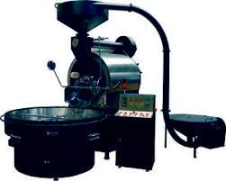

Coffee Roasting
- Unpicked coffee berries
- Fresh coffee beans
- Roasted coffee beans
Commercial Coffee Roaster

Roasting coffee transforms the chemical and physical properties of green coffe beans. When roasted, thje green coffee bean expands to nearly double its original size, changing in color and density.
As the bean absorbs heat, its color shifts to yellow, thjen to a light "cinnamon" brown, and then to rich dark brown color. During roasting, oils on the surface of the bean. The roast will contrinue toi darken until it is removed from heat source.
As the bean absorbs heat, its color shifts to yellow, thjen to a light "cinnamon" brown, and then to rich dark brown color. During roasting, oils on the surface of the bean. The roast will contrinue toi darken until it is removed from heat source.
Roasting coffee transforms the chemical and physical properties of green coffe beans. When roasted, thje green coffee bean expands to nearly double its original size, changing in color and density.